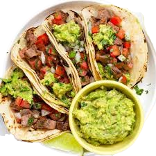

- 8 small corn or flour tortillas
- 300g ground beef or chicken
- 1 medium onion, diced
- 1 cup shredded lettuce
- 1 cup diced tomatoes
- 1 cup shredded cheese
- 1/2 cup sour cream
- Taco seasoning, salt, pepper
-
- Heat a skillet over medium heat and add ground meat and diced onion.
- Cook until browned, breaking up the meat as it cooks. Drain excess fat if needed.
- Stir in taco seasoning, salt, and pepper. Add a splash of water and simmer for a few minutes.
- Warm tortillas in a dry pan or microwave until soft and pliable.
- For extra flavor, toast tortillas lightly before filling.
-
- Spoon the cooked meat mixture into each tortilla.
- Top with lettuce, tomatoes, cheese, and a dollop of sour cream.
- Add your favorite salsa or hot sauce if desired.
-
- Serve tacos immediately while warm and fresh.
- Enjoy tacos with lime wedges and extra toppings on the side.
- Tacos are perfect for sharing with friends and family!